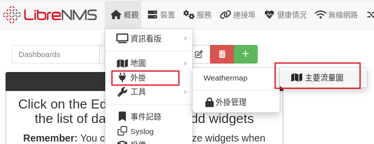
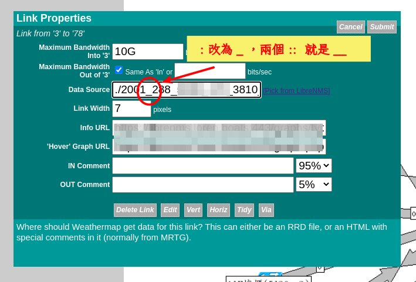

(已過時)Weathermap 網管也要看天氣？？¶
Warning
Weathermap 官方已建議停用，請改用內建的「自訂地圖」功能取代
{kind=link}
Weathermap 是用來視覺化網路傳輸跟實體線路頻寬的比例，用來觀察整體實體線路架構頻寬是否足夠。 先來看一下學術網路的 weathermap 長什麼樣吧！ https://traffic.tanet.edu.tw/index.html
1. Weathermap plugins 安裝¶
可參閱 官方安裝文件
Weathermap 需要 php-pear 才能正常使用，所以先安裝 php-pear，之後重新啟動 php-fpm (8.3是版本號碼，請依照系統安裝的版本做修改)
sudo apt install php-pear
sudo systemctl restart php8.3-fpm
cd /opt/librenms/html/plugins
sudo -u librenms git clone https://github.com/librenms-plugins/Weathermap.git
sudo chmod 775 /opt/librenms/html/plugins/Weathermap/configs
編輯 librenms 的定時工作設定檔 /etc/cron.d/librenms
sudo nano /etc/cron.d/librenms
在檔案最下面新增下列這一行
*/5 * * * * librenms /opt/librenms/html/plugins/Weathermap/map-poller.php >> /dev/null 2>&1
到 librenms 主選單「概觀/外掛/外掛管理」 將 Weathermap 啟用
{kind=link}
2. 手動編輯 weather 流量圖¶
從主選單【概觀/外掛/Weather】 開啟編輯器

開啟後還要點一個連結，才會打開 weather 的編輯器管理畫面。

我們可以建立很多流量圖，每個流量圖就是一個單獨的設定檔，中間輸入一個設定檔檔名，名稱不能包含空白，且一定要用 .conf 結尾。 下方會列出已經建立好的設定檔，點擊名稱就可以編輯。
{kind=link}
3. 編輯輸出的網頁及圖形檔¶
weathermap 會定時讀取 rrd 1 資料，然後將流量繪製至一個圖形檔，所以我們先設定要輸出的檔案名稱。

4. 加入節點¶
-
加入要顯示的交換器（防火牆）節點
 1.先點選 Add Node 功能按鈕，然後在要放置節點的位置，點滑鼠左鍵，就會在圖面放上一個節點
1.先點選 Add Node 功能按鈕，然後在要放置節點的位置，點滑鼠左鍵，就會在圖面放上一個節點 -
點選節點，可以編輯節點的資料，我們假設左邊為 A 節點，右側為 B 節點，分別設定 A 、B 節點是哪台交換器，並選擇要顯示的圖示

- 要移動節點位置、刪除節點、修改顯示名稱，則一樣點選節點，然後在編輯對話框執行對應的動作

5. 增加連線¶
假設 A 交換器的 port 5 連接到 B 的 port 7， 我們在設定節點的資料時，只需要選擇 A port 5 或是 B port 7 其中一個 port 就可以設定好連線，所以要先決定等一下打算用 A port 5 或是 B port 7 來當資料。決定好之後，才能接下來的動作
我們假設要選 A port 5 ，當連線資料來源。接著點選 Add Link，然後依序點擊圖面上的 A節點圖示、B節點圖示，節點點選的順序很重要，不然連線顯示的資料方向會錯誤。

接著點選連線（上圖步驟4），編輯連線的資料來源
 第一欄要設定線路頻寬，這樣依流量佔頻寬比例會依比例不同顯示出不同顏色。然後選擇是哪個交換器的那一個port即可。
第一欄要設定線路頻寬，這樣依流量佔頻寬比例會依比例不同顯示出不同顏色。然後選擇是哪個交換器的那一個port即可。
- weathermap 流量圖並是即時更新，預設是每五分鐘會重新繪製一次，要觀看繪製的圖形，請執行【概觀/外掛/Weathermap/流量標題】 
{kind=link}
6. ipv6 連線 BUG¶
如果 ipv6 的連結不會正常顯示，點選 ipv6 節點的 port之後，將 ipv6 位址的 : 改成下底線 _。 
{kind=link}
7. 把流量圖加入資訊看板¶
Wethermap 會產生一個 html 跟一個圖片檔。資訊看板中，有一個外部影像的小部件，只要複製圖片網址，就可以將 weathermap 圖片顯示在看板中。不過如果一開始就打算放在看板內， Weathermap 的圖片大小建議設定小一點，以免看板顯示的圖片不清楚。
參考資料：
-
RRDtool https://zh.wikipedia.org/zh-tw/RRDtool ↩